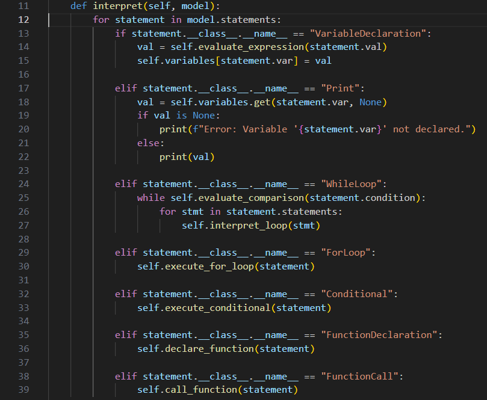
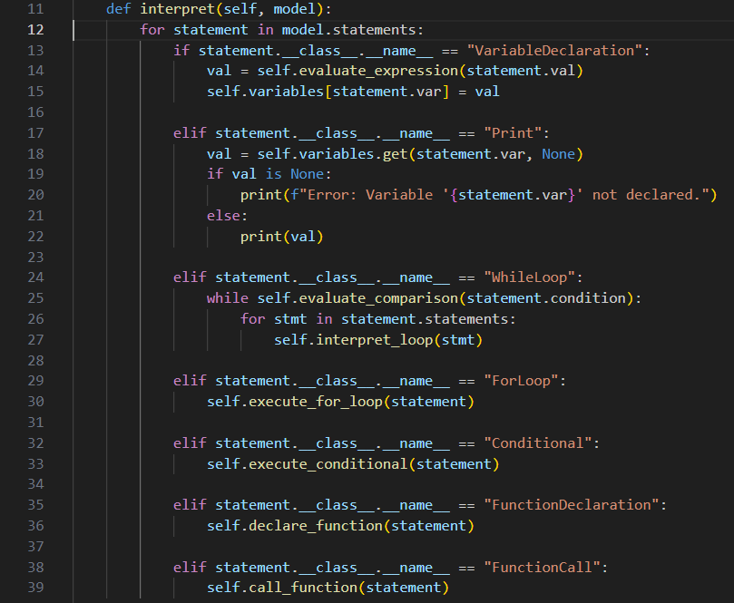
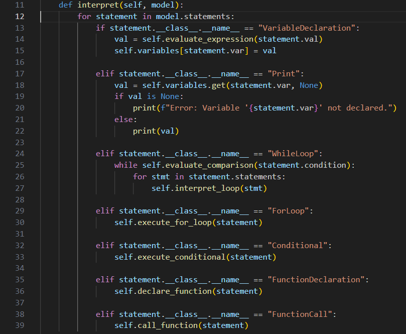

Screenshots
Below are screenshots showing the syntax and interpreter:
 

Visit the GitHub Repository for more details and updates.
w1 ff 4 ff w2 ff 3.14 ff r w1 r w2
This snippet demonstrates variable declarations and output in WASSD. The first variable, w1, is assigned an integer value, while w2 is assigned a floating-point value. The r command outputs these values to the console.
Below are screenshots showing the syntax and interpreter:
